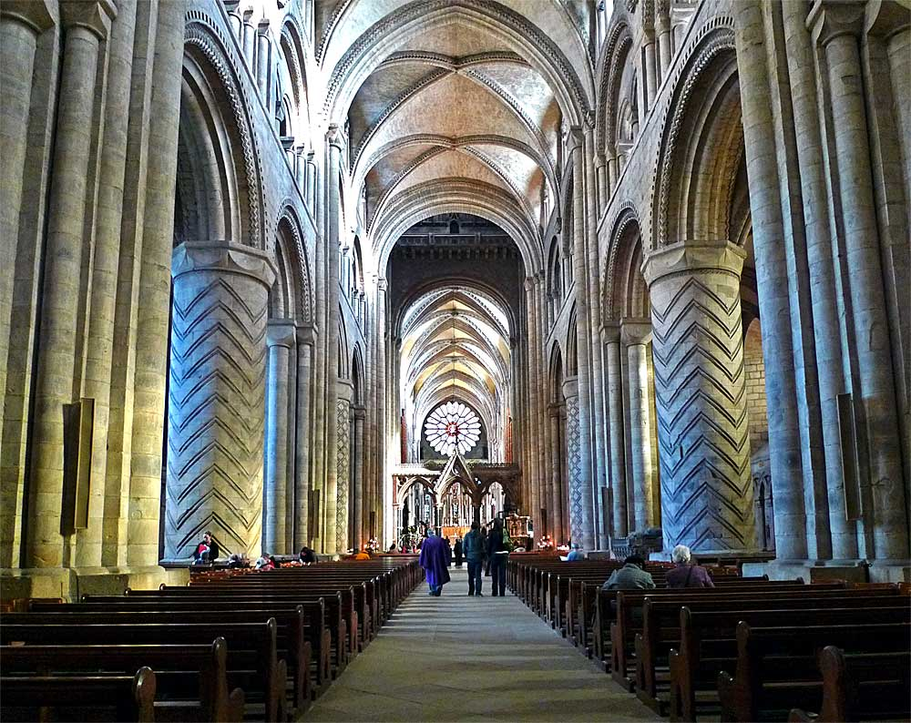

Durham Cathedral
Durham Cathedral and Durham Castle were inscribed by UNESCO as one of the first of the British World Heritage Sites in 1986. Durham Cathedral was built in the late 11th and early 12th centuries to house the relics of St Cuthbert and the Venerable Bede. It is the finest example of Norman architecture in England. Behind the cathedral stands the castle, an ancient Norman fortress which was the residence of the prince-bishops of Durham.
